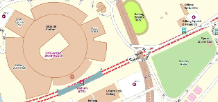

Jurong West ActiveSG Gym, formerly known as Jurong West ClubFITT Gym, is a public gym operated by Sport Singapore.
As the 3rd integrated facility with pool features, Jurong West Sport Centre, formerly known as Jurong
West Sport and Recreation Centre, has raised the benchmark for all swimming pools in 2006. With close proximity to
the
Pioneer MRT station, it has been able to position itself to be a sport and leisure venue.
More than just being a choice venue for sports activities, Jurong West Sport Centre offers a range of
food and beverage outlets with ample sheltered parking lots.
Get Direction
